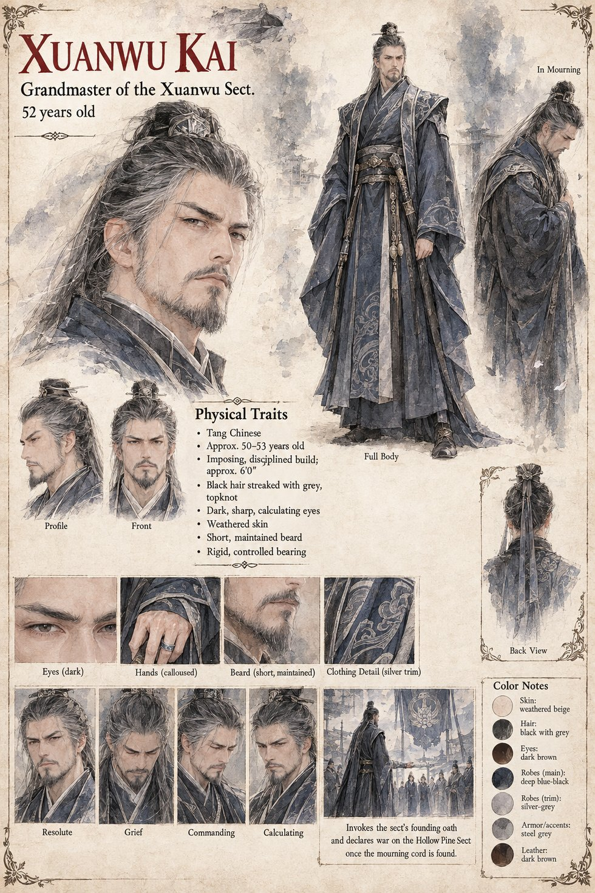

Xuanwu Kai
Grandmaster of the Xuanwu Sect · 52 by his sheet
Grandmaster of a sect that has stood in the provincial capital for six generations, founded by General Kang Yi, last Grand Marshal of the Yan's northern garrisons, and that in all that time has never lost a named disciple to violence outside a sanctioned duel: a record he treats as close to sacred law as anything the sect never bothered to write down, on the theory that a rule no one has needed to test does not require ink. When his only son, three months from his own succession, is killed in a clearing, he receives the jade token before the body and for the length of one held breath believes the boy lost it gambling. He does not weep in front of his disciples, then or in the seven days of ritual mourning, a restraint every disciple admires and misreads; it is the discipline of a man who has found exactly one place to put his grief that does not require weeping.
On the eighth morning he invokes before the assembled sect a clause of the founding oath no Grandmaster has ever had to speak aloud: that a named disciple's death by another sect's hand, outside sanctioned combat, is a debt owed in the sect's own coin and no other, not the province's courts, not the throne's soldiers, not even the sect's own survival. Nothing in it requires him to confirm who killed his son, and six generations of never needing it have left no procedure for doubting it. A search three days later finds a strand of Hollow Pine mourning hemp near where the young master fell, and he declares war that evening without sending word. The war lasts forty-one days and kills perhaps sixty people to avenge one. He lives nineteen years more and rebuilds the sect's numbers within five, and eleven years after the war a retired soldier tells him that the timing never fit. He takes the founding oath from its case that night, reads in its margin the founder's two words, revise later, and never revises the record by so much as a character. His sheet draws him imposing and disciplined, about six feet, with a short beard and grey-streaked black hair; its age and build are its own.
Appears In

Related Subjects


Related Records

On the eighth morning of mourning, Xuanwu Kai stands before the assembled sect and invokes the clause of the founding oath that no Grandmaster in six generations has had to speak aloud; nothing in it requires him to confirm who killed his son.